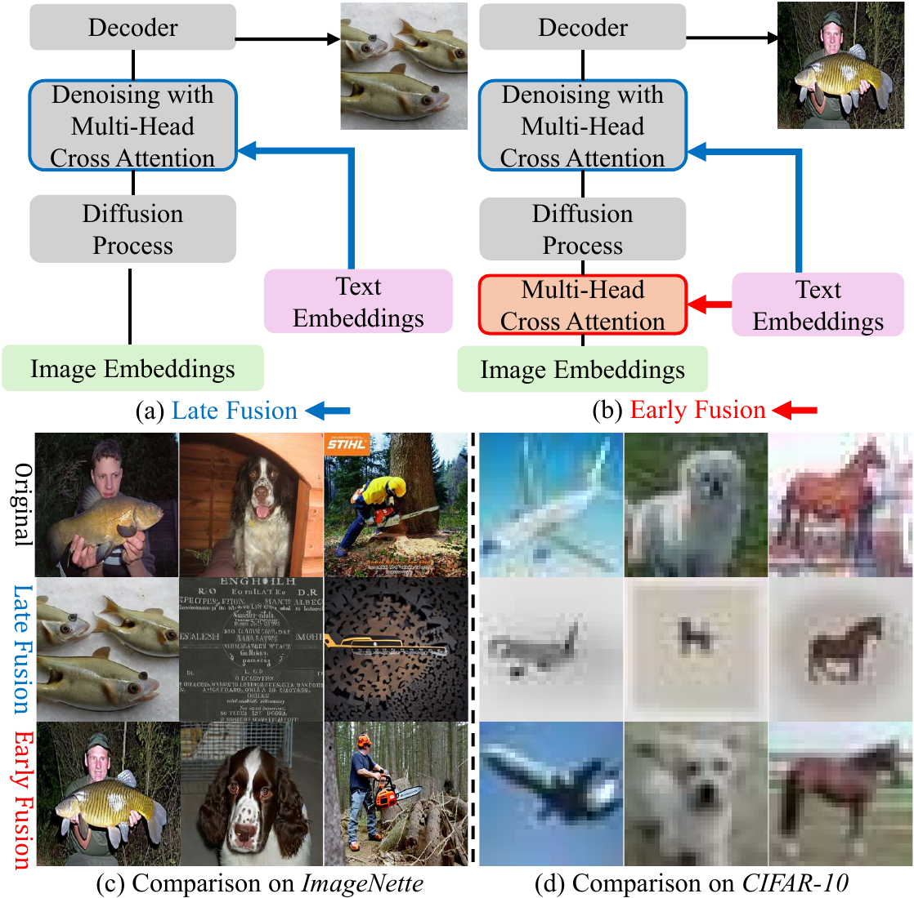
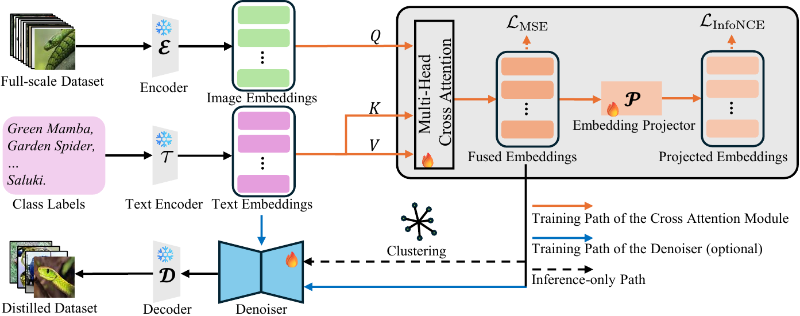
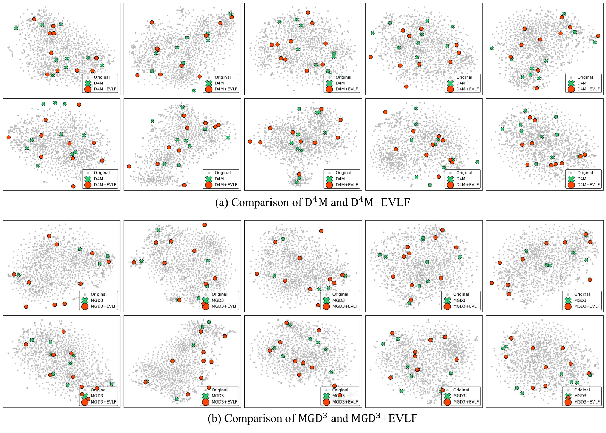
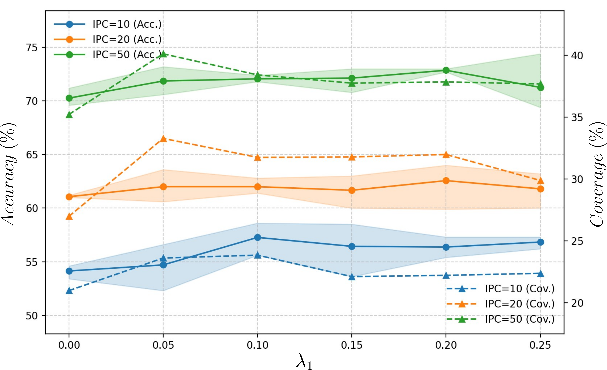
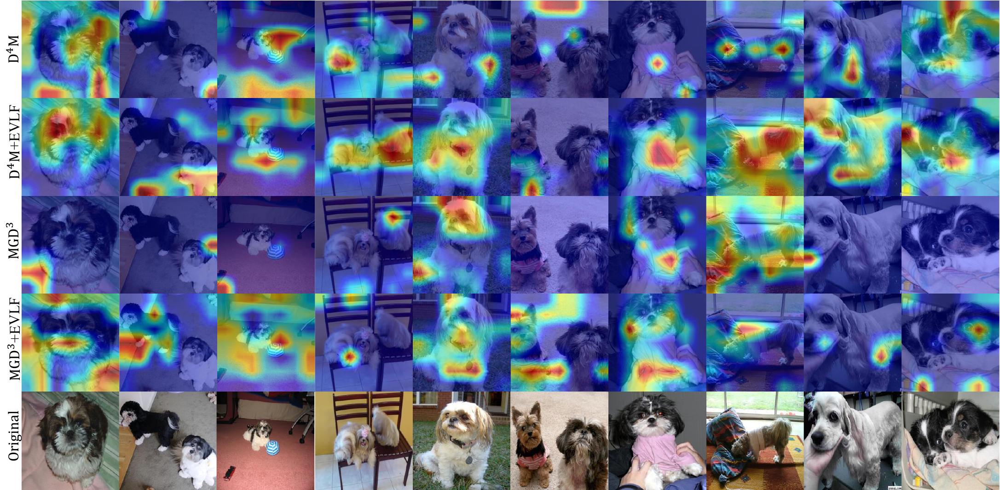

Input
Visual latents together with class-level text guidance.
Introduction
Dataset distillation (DD) seeks to synthesize compact training sets that retain strong downstream utility with far fewer samples. In recent diffusion-based DD methods, textual semantics are often injected late in the generation process, which can cause prompt guidance to dominate visual evidence and weaken the contribution of visual latents.
In EVLF, we retain the conventional late-fusion pathway and additionally introduce an early vision-language fusion module at the encoder-to-backbone transition. This design strengthens the interaction between visual structure and semantic guidance throughout the denoising process, rather than relying only on late-stage conditioning.
EVLF is a lightweight, plug-and-play component for diffusion-based DD pipelines with an encoder. By complementing late fusion with early cross-modal interaction, we improve the balance between semantic alignment and visual fidelity, leading to more coherent synthetic samples and stronger downstream classification performance.

Visual latents together with class-level text guidance.
We add early cross-modal fusion while preserving the standard late-fusion pathway.
More coherent synthetic samples and better downstream performance.
Method
EVLF introduces two key modifications to the diffusion-based dataset distillation pipeline: we revise the fusion interface by performing vision-language interaction at the encoder-to-backbone transition, and we optionally fine-tune the denoiser when adaptation to the fused latent space is needed.

Framework overview of EVLF. We modify the original diffusion-based dataset distillation pipeline in two ways. First, we introduce an additional early vision-language fusion module at the encoder-to-backbone interface, allowing visual latents and text embeddings to interact before denoising while preserving the standard late-fusion pathway. Second, for pipelines whose pretrained denoiser is not adapted to the target dataset or the fused latent distribution, we optionally fine-tune the denoiser to better match the fused representations. Open PDF
Results
Qualitative comparisons across ImageIDC, ImageNette, and ImageWoof show that EVLF produces synthetic samples with stronger label fidelity and more coherent visual structure than conventional late-fusion baselines. In particular, EVLF better preserves object shape, texture, and class-consistent details while reducing the over-corrected artifacts that often appear when semantic guidance dominates the denoising process.
Quantitative Results
We report the main quantitative comparisons from the paper for ImageWoof, followed by the ImageNette and ImageIDC results. Across datasets and IPC settings, EVLF consistently improves over diffusion-based baselines, with especially clear gains in low-IPC regimes where preserving both semantic fidelity and visual structure is most challenging.
| IPC | Test Model | Random | DiT | Minimax | D⁴M | D⁴M+EVLF | MGD³ | MGD³+EVLF |
|---|---|---|---|---|---|---|---|---|
| 10 | ConvNet-6 | 24.3 ± 1.1 | 34.2 ± 1.1 | 33.3 ± 1.7 | 29.4 ± 0.9 | 34.3 ± 2.4 | 33.5 ± 1.9 | 34.9 ± 1.0 |
| ResNetAP-10 | 29.4 ± 0.8 | 34.7 ± 0.5 | 36.2 ± 3.2 | 33.2 ± 2.1 | 37.3 ± 0.7 | 36.6 ± 0.9 | 39.3 ± 0.3 | |
| ResNet-18 | 27.7 ± 0.9 | 34.7 ± 0.4 | 35.7 ± 1.6 | 32.3 ± 1.2 | 35.9 ± 2.1 | 35.1 ± 1.8 | 38.5 ± 0.3 | |
| 20 | ConvNet-6 | 29.1 ± 0.7 | 36.1 ± 0.8 | 37.3 ± 0.1 | 34.0 ± 2.3 | 40.1 ± 2.6 | 36.2 ± 1.6 | 40.2 ± 0.5 |
| ResNetAP-10 | 32.7 ± 0.4 | 41.1 ± 0.8 | 43.3 ± 2.7 | 40.1 ± 1.6 | 42.8 ± 0.2 | 44.5 ± 2.8 | 45.1 ± 0.9 | |
| ResNet-18 | 29.7 ± 0.5 | 40.5 ± 0.5 | 41.8 ± 1.9 | 38.4 ± 1.1 | 40.7 ± 1.3 | 40.3 ± 2.5 | 42.1 ± 0.3 | |
| 50 | ConvNet-6 | 41.3 ± 0.6 | 46.5 ± 0.8 | 50.9 ± 0.8 | 47.4 ± 0.9 | 52.5 ± 0.9 | 51.9 ± 0.4 | 53.5 ± 0.4 |
| ResNetAP-10 | 47.2 ± 1.3 | 49.3 ± 0.2 | 53.9 ± 0.7 | 51.7 ± 3.2 | 55.8 ± 0.2 | 55.6 ± 1.0 | 59.0 ± 1.1 | |
| ResNet-18 | 47.9 ± 1.8 | 50.1 ± 0.5 | 53.7 ± 0.6 | 53.7 ± 2.2 | 58.1 ± 0.9 | 56.3 ± 0.5 | 58.7 ± 1.5 |
Classification accuracy (%) on ImageWoof across IPC settings and test architectures. Values are reported as mean ± standard deviation. The best result in each row is highlighted.
| Dataset | IPC | Random | DiT | DM | Minimax | D⁴M | D⁴M+EVLF | MGD³ | MGD³+EVLF |
|---|---|---|---|---|---|---|---|---|---|
| ImageNette | 10 | 54.2 ± 1.6 | 59.1 ± 0.7 | 60.8 ± 0.6 | 57.7 ± 1.2 | 60.9 ± 1.7 | 65.8 ± 1.2 | 64.3 ± 1.0 | 66.0 ± 1.6 |
| 20 | 63.5 ± 0.5 | 64.8 ± 1.2 | 66.5 ± 1.1 | 64.7 ± 0.8 | 66.3 ± 1.3 | 71.7 ± 0.5 | 69.2 ± 1.9 | 72.5 ± 0.8 | |
| 50 | 76.1 ± 1.1 | 73.3 ± 0.9 | 76.2 ± 0.4 | 73.9 ± 0.3 | 77.7 ± 1.1 | 79.7 ± 0.5 | 79.2 ± 1.9 | 79.5 ± 0.4 | |
| ImageIDC | 10 | 48.1 ± 0.8 | 54.1 ± 0.4 | 52.8 ± 0.5 | 51.9 ± 1.4 | 47.7 ± 0.5 | 57.3 ± 1.5 | 55.0 ± 2.3 | 56.3 ± 1.5 |
| 20 | 52.5 ± 0.9 | 58.9 ± 0.2 | 58.5 ± 0.4 | 59.1 ± 3.7 | 56.3 ± 0.7 | 62.0 ± 0.7 | 61.7 ± 1.0 | 64.1 ± 0.3 | |
| 50 | 68.1 ± 0.7 | 64.3 ± 0.6 | 69.1 ± 0.8 | 69.4 ± 1.4 | 67.8 ± 1.0 | 72.1 ± 0.3 | 71.0 ± 0.9 | 72.7 ± 1.1 |
Classification accuracy (%) on ImageNette and ImageIDC with ResNetAP-10. Values are reported as mean ± standard deviation. The best result in each row is highlighted.
Analysis
We report representation, attribution, and hyperparameter analyses using t-SNE, Grad-CAM, and the line-chart summary from the paper.
Embedding space

t-SNE comparison on ImageIDC. Both D4M and MGD3 tend to produce tightly clustered synthetic samples, indicating limited diversity and restricted coverage of the original feature space. After incorporating EVLF, the generated samples become more dispersed and better separated, suggesting improved distributional coverage and richer class-wise variation.
Hyperparameter

Hyperparameter analysis of λ1 on ImageIDC. Enabling text injection (λ1 > 0) noticeably improves both validation accuracy and distributional coverage, while λ1 = 0 leads to over-corrected generations dominated by late-stage prompt conditioning. Once EVLF is introduced, both metrics become more stable, indicating that the method is robust to moderate changes in the text-alignment weight.
Attribution

Grad-CAM visualizations for the Shih-Tzu class from the ImageWoof validation set. Compared with models trained on datasets distilled by the original baselines, models trained on EVLF-enhanced data exhibit more discriminative and semantically relevant attention. In particular, EVLF suppresses redundant background activation for D4M and encourages MGD3 to focus on a broader and more complete region of the target object.
Citation
@article{cai2026evlf,
title={EVLF: Early Vision-Language Fusion for Generative Dataset Distillation},
author={Cai, Wenqi and Zou, Yawen and Li, Guang and Gu, Chunzhi and Zhang, Chao},
journal={arXiv preprint arXiv:2603.07476},
year={2026}
}
Project materials and figure assets are collected here for convenient reference.